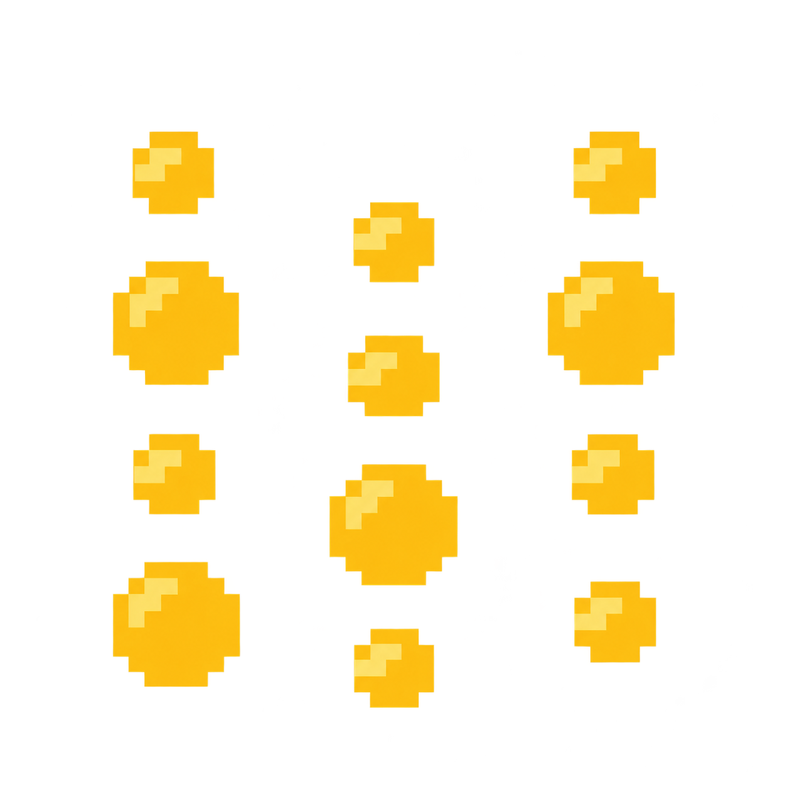
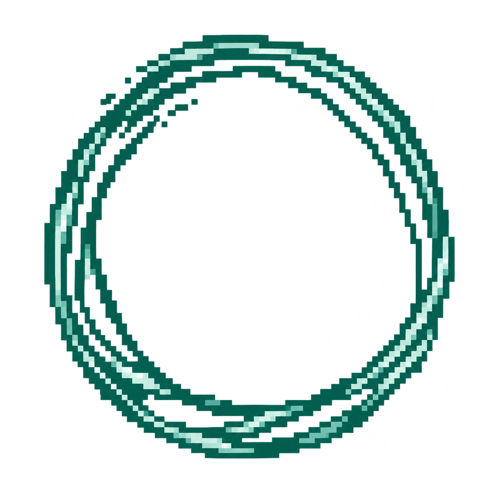
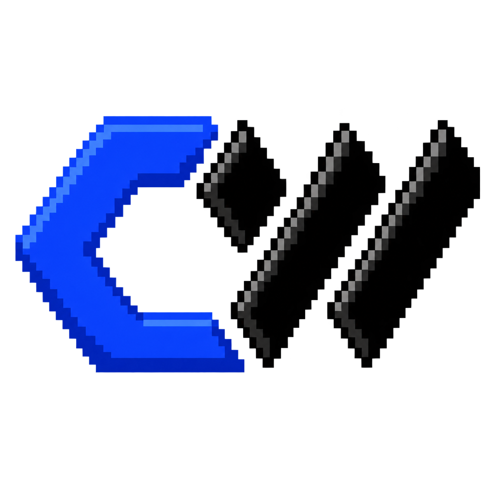

Top-K
ernel
Projects
New run ↗
Loading run…
Replay run ↻
Exploration
Dashboard
Results

W&B

marimo

ARIA
Search generations
Open dashboard ↗
Performance
Final results ↗
W&B
marimo
ARIA
Final results
Evidence ↗
W&B ↗
marimo ↗
Ask ARIA ↗
Run your repository ↗
Weights & Biases
Open W&B ↗
marimo
Open notebook ↗
Ask ARIA
Open in W&B ↗
Analysis prompt
Copy prompt